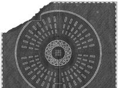
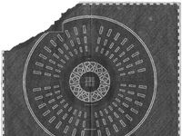

El término "lore" se refiere a la historia o trasfondo que se esconde detrás de un personaje o personajes y de los acontecimientos más importantes que le dan sentido a un videojuego, una serie de televisión, una saga literaria o de películas, un server de Minecraft, una banda de música, etc.
En esta sección encontrarás la historia que se formó inicialmente durante el hiatus entre la era de Blurryface y Trench.
 
